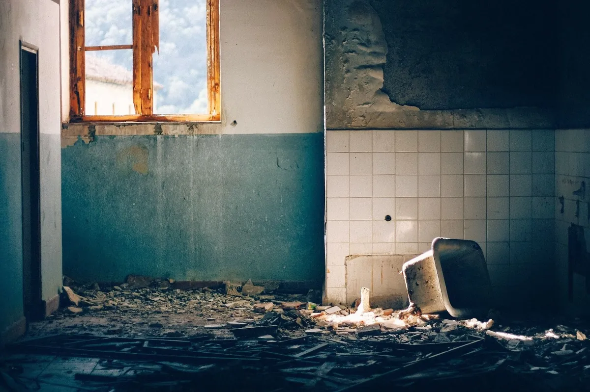

La situation : vous êtes propriétaire d’une maison ou d’un appartement que vous souhaitez mettre en location. Cependant, il y a des travaux à réaliser.
Aujourd’hui, nous nous intéresserons aux aides financières pour les propriétaires bailleurs, qui sont différentes des aides pour les propriétaires occupants.
Tous les dispositifs présentés sont proposés par l’Agence Nationale de l’Habitat (Anah).
Les travaux concernés
Les principaux travaux concernés par les dispositifs d’aide sont liés à l’amélioration des performances énergétiques et à la réhabilitation d’un bien immobilier.
Toutefois, il existe également des aides pour les travaux d’adaptation pour l’autonomie des personnes ou pour des rénovations classiques.
La réhabilitation d’un logement
Les travaux de réhabilitation d’une habitation sont généralement des travaux lourds. En effet, ils s’attaquent à des biens dont le niveau de dégradation a été mis en lumière par un arrêté de péril (ou d’insalubrité) ou un diagnostic.
Ainsi, la réhabilitation d’un ouvrage peut concerner un réseau en particulier, par exemple la rénovation de l’installation électrique, des réseaux d’eau ou de gaz.
Il peut également s’agir de travaux de confortement structurel. Généralement réalisés en sous-oeuvre, ces interventions visent à conforter et à stabiliser le bâtiment dégradé. Ces chantiers se déroulent le plus souvent au niveau des fondations ou des planchers intermédiaires. A noter que la toiture peut aussi être rénovée.
Enfin, la rénovation d’une salle de bains qui n’est plus fonctionnelle peut être considérée comme de la réhabilitation. C’est le cas lors de l’installation d’une douche ou d’une baignoire, mais aussi d’un WC.
Globalement, les travaux de réhabilitation ont pour but de rendre le logement habitable, dans de bonnes conditions.

L’amélioration des performances énergétiques
Les prestations d’amélioration des performances énergétiques sont conditionnées par un objectif : améliorer la consommation d’énergie d’au moins 35%.
Pour cela, le propriétaire peut commencer par engager des travaux d’isolation des murs. Que l’isolation soit réalisée par l’intérieur ou l’extérieur, le but est d’obtenir une enveloppe étanche qui empêche les déperditions de chaleur.
De même, les menuiseries (fenêtres, porte-fenêtres, porte d’entrée…) peuvent aussi être remplacées pour éviter les ponts thermiques et améliorer l’isolation.
La consommation énergétique du logement peut être améliorée en remplaçant le système de chauffage et/ou de production d’eau chaude. Dans ce cas, les équipements installés sont modernes et peu énergivores.
Les aides
Travaux de réhabilitation d'un logement très dégradé
Prise en charge : 35 % du montant total des travaux HT.
Aide : Habiter serein
Critères :
- logement mis en location au maximum de 350 € par m2
- aide de maximum 28 000 € par logement
Travaux de mise en sécurité
Prise en charge : 35 % du montant total des travaux HT
Aide : Habiter sain
Critères :
- logement mis en location au maximum de 262,5 € par m2
- aide de maximum 21 000 € par logement
Travaux d’adaptation pour l'autonomie des personnes (âge ou handicap)
Aide : Habiter facile
Critères :
- logement mis en location au maximum de 262,5 € par m2
- aide de maximum 21 000 € par logement.
Travaux de rénovation “classique”
Prise en charge : 25 % du montant total des travaux HT
Aide : Habiter sain
Critères :
- logement mis en location au maximum de 187,5 € par m2
- aide de maximum 15 000 € par logement
Travaux d’amélioration de la performance énergétique
Prise en charge : 25 % du montant total des travaux HT
Aide : Habiter mieux sérénité
Critères :
- logement mis en location au maximum de 187,5 € par m2
- aide de maximum 15 000 € par logement
Prime supplémentaire
Si les travaux permettent de faire baisser la consommation énergétique du bien d’au moins 35 %, la prime Habiter Mieux peut être attribuée en complément de n’importe quelle autre aide.
MaPrimeRénov
A partir du 1er juillet 2021, les propriétaires qui mettent en location un bien immobilier pourront demander l’aide maprimerenov.
Celle-ci concerne essentiellement les travaux de rénovation énergétique du parc locatif privé. Le montant est défini selon le calcul des revenus et le gain écologique des travaux.
Comment réaliser les travaux ?
Comme évoqué, de nombreuses aides sont à votre disposition pour différents types d’interventions sur un logement mis en location.
Cependant, ces travaux doivent être réalisés par des professionnels qualifiés. Certains dispositifs demandent même que l’entreprise en charge des travaux soit labellisée (Qualibat, RGE…).
Trouver un prestataire de confiance et avec le label adapté est donc très important. Cela peut prendre du temps car il faut trouver une entreprise sérieuse, labellisée et… disponible dans vos délais (rien que ça…) !
En réunissant des entreprises qualifiées dans le réseau Plateo, nous pouvons vous faciliter cette tâche. En fonction de votre projet, nous nous occupons du choix des prestataires, selon les critères évoqués ci-dessus.
Alors si vous êtes situés à Marseille, Aix-en-Provence et ses alentours ou dans la région PACA, n’hésitez pas à faire appel à Plateo !